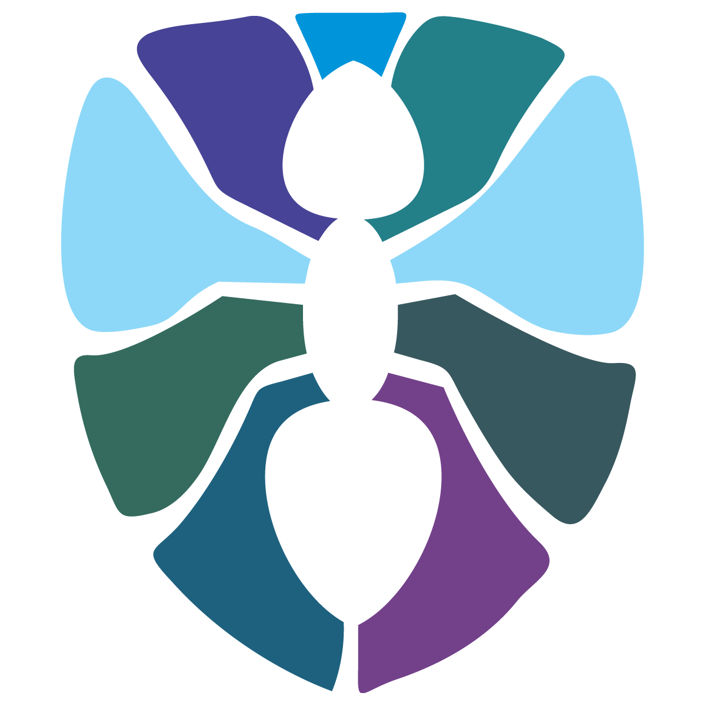

DevOps — это прогрессивный подход, нацеленный на синергию отделов разработки программного обеспечения и эксплуатации инфраструктуры, где это ПО запускается.
Поскольку DevOps — это не только технический вопрос, но и изменение подходов к разработке, введение в проект готовых специалистов и процессов позволяет добиться нужного эффекта в сжатые сроки. Узнать больше о нас .
Будучи пионерами в обслуживании инфраструктурных Open Source-решений, мы непрерывно совершенствуем технологии и подходы к их применению, а также процессы взаимодействия с клиентами.
Остались вопросы?
Свяжитесь с нами!